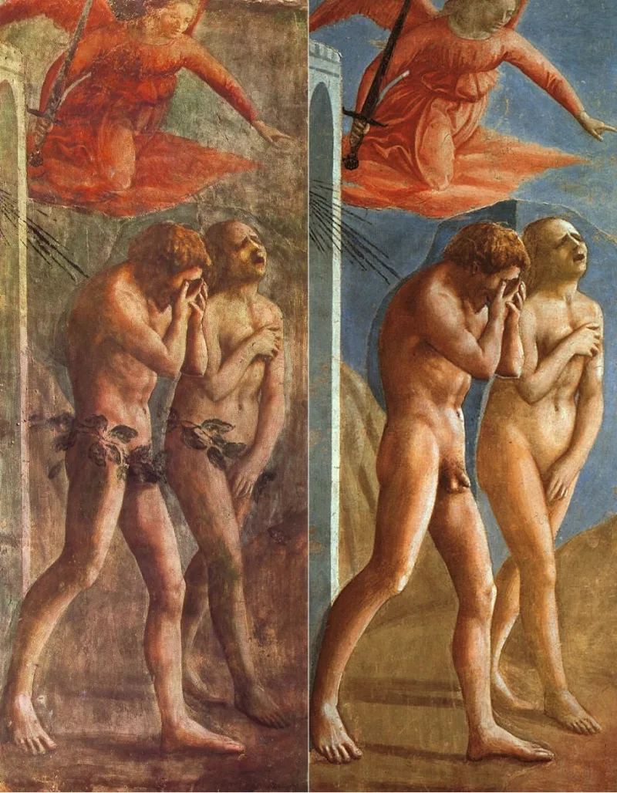
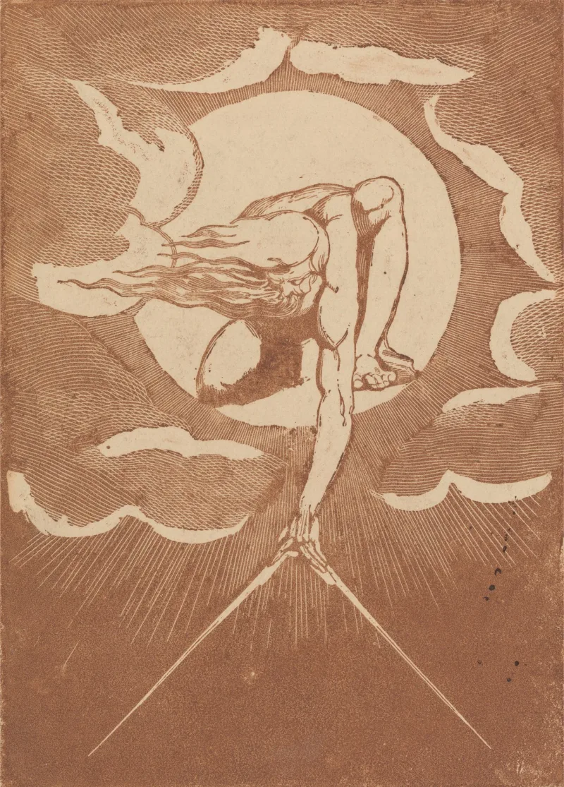

LDS scholars have a real answer here. Say so before your friend does.
2 Nephi 2:22-25 says Adam's fall was necessary and good. Without it, Adam and Eve "would have had no children." And "Adam fell that men might be; and men are, that they might have joy." Alma 12:22-26 takes the same line.
Romans 5:12-19 treats the fall as sin. It brought death and condemnation, not joy.
Romans 8:20-22 says creation was subjected to futility by it.
Genesis 1:28. God told Adam and Eve to "be fruitful, and multiply" before the fall.
So the premise that there could be no children without the fall runs straight into that command.
And it is a real one. The BYU Religious Studies Center points to the felix culpa tradition — the happy fault.
Ambrose taught it. Augustine wrote "O felix culpa." The Easter Exsultet sings it.
Christians have long said God brings a greater good out of the fall. Scripture Central adds 2 Nephi 2:11: agency and joy need a world with opposition in it.
And Eve is honoured here rather than blamed.
Genuinely arguable, and narrower than critics usually make it. Concede the felix culpa point at once.
But notice the difference. That tradition celebrates redemption despite the fall.
2 Nephi 2 makes the fall itself necessary. Genesis 1:28 still has no strong published answer.
"God says be fruitful in Genesis 1:28. That's before the fall, isn't it?"


Christians have long taught the happy fault, and Augustine wrote 'O felix culpa' himself.
The BYU Religious Studies Center, in 'The Fortunate Fall of Adam and Eve', places this doctrine inside the old Christian felix culpa tradition, the happy fault. Ambrose taught it. Augustine wrote 'O felix culpa'. The Easter Exsultet still sings it. On that tradition the fall makes room for a greater good, the Incarnation. So a fall inside God's plan is not foreign to Christian faith.
Scripture Central adds that Lehi's point is structural. Mortal life, choice and the capacity for joy all need a world built on opposition. 2 Nephi 2:11 says exactly that.
They also call the fall a transgression of a lesser law rather than sin in the fullest sense. Some Christian theologians draw the same line. And Eve is honoured here rather than blamed.
Their happy fault point is real, but the Genesis 1:28 command still has no answer.
The felix culpa parallel is a genuine steelman. Christians have long held that God brings a greater good out of the fall. Concede that at once.
It does not reach the claim actually made here. 2 Nephi 2 says the fall was needed for children to be born. Genesis 1:28 has God command 'be fruitful, and multiply' before the fall. The text also says Adam and Eve would have stayed in innocence, having no joy.
So the old tradition celebrates rescue in spite of the fall. 2 Nephi 2 makes the fall itself necessary. That is a different claim, and Genesis 1:28 still has no strong published answer.